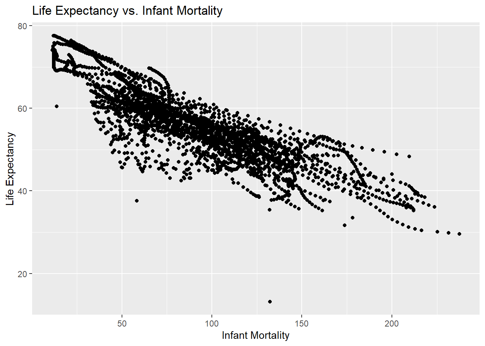

help(gapminder) ## Viewing the structure of gapminder str(gapminder) ## Viewing the data summary statistics of gapminder data summary(gapminder) ## Determining the type of object gapminder is class(gapminder)
Assign african countries to a variable called africa data
Accessing tidyverse package
library(tidyverse) ## Create a new variable including the Regions Western Africa and Eastern Africa only ### Assigning the Continents into values “Africa” or “Other library(tidyverse)
print(d3) ## Checking the number of values in africadata summary(d3$africadata) >The number of values is correct and africa data only includes the continent Africa
Creating 2 New objects
Creating object containing infant_mortality and life_expectancy under d4
print(d4) ## Creating object containing population and life_expectancy under d5 d5 <- d3 %>% select(life_expectancy, population)
print(d5) library(ggplot2)
Create a plot of d4 and d5
Plot life expectancy as a funciton of infant mortality
Openning the ggplot2 library
library (ggplot2)
lifevim_plot2 <- ggplot(d4, aes(x = infant_mortality, y = life_expectancy), color=country) + geom_point() + labs(title = “Life Expectancy vs. Infant Mortality”, x = “Infant Mortality”, y = “Life Expectancy”)
print(lifevim_plot2)
Plot life expectancy as a function of populaiton size using ggplot2
lifevpop_plot <- ggplot(d5, aes(x = log(population), y = life_expectancy)) + geom_point() + labs(title = “Life Expectancy vs. log(Population)”, x = “Log(Population)”, y = “Life Expectancy”)
print(lifevpop_plot)
Looking at differences in life_expectancy versus mortality by other variables
I begin by looking at differences in infant_morality and life_expancy by country using the same plot, but with color
lifevim_plot2 <- ggplot(d3, aes(x = infant_mortality, y = life_expectancy, color = country)) + geom_point() + labs(title = “Life Expectancy vs. Infant Mortality”, x = “Infant Mortality”, y = “Life Expectancy”)
print(lifevim_plot2)
I observe differences in the rate depending on the country.
I check to made sure the differences are not due to regional trends
lifevim_plot3 <- ggplot(d3, aes(x = infant_mortality, y = life_expectancy, color = region)) + geom_point() + labs(title = “Life Expectancy vs. Infant Mortality”, x = “Infant Mortality”, y = “Life Expectancy”)
print(lifevim_plot3)
It seems that country is the determinant of infant mortality and life expectancy, so I do a faceted plot to confirm
lifevim_plot4 <- ggplot(d3, aes(x = infant_mortality, y = life_expectancy)) + geom_point() + facet_wrap(~country) + labs(title = “Life Expectancy vs. Infant Mortality by Country”, x = “Infant Mortality”, y = “Life Expectancy”)
print(lifevim_plot4) >The explaination for the streaks in the life expectancy versus infant mortality trends is that infant mortality differs by country, which leads life expectancy to also differ by African country.
Now, I will confirm that the life_expectancy and population streaks are also due to differeces in the country
lifevpop_plot2 <- ggplot(d3, aes(x = log(population), y = life_expectancy, color = country)) + geom_point() + labs(title = “Life Expectancy vs. log(Population) by Country”, x = “Log(Population)”, y = “Life Expectancy”)
print(lifevpop_plot2)
Each country contains a different colorred streak, confirming that life expectancy is positively related to population depending on each country. This is because the life expectancy differs for each country, resulting in different population sums, despite havign a similar overall trend.
I will now examine differences in the plot by year to see if this differs by country I first dot his with the life expectancy versus infant mortality plot
lifevim_plot5 <- ggplot(d3, aes(x = infant_mortality, y = life_expectancy, color = country)) + geom_point() + facet_grid(year ~ ., scales = “free_y”) + labs(title = “Life Expectancy vs. Infant Mortality stratified by year and colored by country”, x = “Infant Mortality”, y = “Life Expectancy”)
print(lifevim_plot5) >With each line representing a year, it seems that the life expectancy moves upwards each year. I will now confirm that this is also the case for the life expectancy versus population.
lifevpop_plot3 <- ggplot(d3, aes(x = log(population), y = life_expectancy, color = country)) + geom_point() + facet_grid(year ~ ., scales = “free_y”) + labs(title = “Life Expectancy vs. log(Population) by Country”, x = “Log(Population)”, y = “Life Expectancy”)
print(lifevpop_plot3) >This upwards trend is displayed by country in this plot as well, confirming that the country and year impact the life expectancy-based trends.
Now I will use a code to find which years have missing values for infant mortality
Creating a new object for just the values with the year 2000
d7 <- d3 %>% filter(year == 2000) # Checking that the new object is correct str(d7) summary(d7)
Remaking the plots with the year 2000 only
Plot with life expectancy versus infant mortality
lifevim_plot6 <- ggplot(d7, aes(x = infant_mortality, y = life_expectancy)) + geom_point() + labs(title = “Life Expectancy vs. Infant Mortality in 2000”, x = “Infant Mortality”, y = “Life Expectancy”)
print(lifevim_plot6) >A negative trend is still observed between infant mortality and life expectancy int heyear 2000.
Plot with life expectancy versus log(population)
lifevpop_plot4 <- ggplot(d7, aes(x = log(population), y = life_expectancy)) + geom_point() + labs(title = “Life Expectancy vs. log(Population) by Country”, x = “Log(Population)”, y = “Life Expectancy”)
print(lifevpop_plot4) >There is no trend observed between log(population) and life expectancy in this case, so we will test this using a linear model.
Linear model of previous plots to test for trends in the year 2000
Model for life expectancy versus infant mortality in 2000
lmfit_lifevim <- lm(life_expectancy ~ infant_mortality, d7)
lmtable_lifevim <- broom::tidy(lmfit_lifevim) print(lmtable_lifevim) >Model table reflects the negative trend between infant mortality and life expectancy in the year 2000
Model for life expectancy versus log(population) in 2000
lmfit_lifevpop <- lm(life_expectancy ~ log(population), d7)
lmtable_lifevpop <- broom::tidy(lmfit_lifevpop) print(lmtable_lifevpop) >There is a slight negative trend in life expectancy and log(population), however this is NOT statistically significant, with a p-value of 0.5. Therefore no trend is observed for the year 2000.
##This section contributed by Cassia Roth
First, I will load all of the necessary packages to run the data analysis.
#Loading packageslibrary(dslabs)library(dplyr)
Attaching package: 'dplyr'
The following objects are masked from 'package:stats':
filter, lag
The following objects are masked from 'package:base':
intersect, setdiff, setequal, union
library(ggplot2)library(here)
here() starts at /Users/cassiaroth/Documents/GitHub/MADARoth/MADAcourserepo
library(renv)
Attaching package: 'renv'
The following objects are masked from 'package:stats':
embed, update
The following objects are masked from 'package:utils':
history, upgrade
The following objects are masked from 'package:base':
autoload, load, remove
Next, I will explore the murders dataset from dslabs. This dataset contains information about the number of gun murders in each state in the United States in 2010, as well as the population and region of each state. Gun murder data were collected from FBI reports. You can see more about the dataset at dslabs.
#Looking at help file for murders datahelp(murders)#Getting overview of data structurestr(murders)
state abb region population
Length:51 Length:51 Northeast : 9 Min. : 563626
Class :character Class :character South :17 1st Qu.: 1696962
Mode :character Mode :character North Central:12 Median : 4339367
West :13 Mean : 6075769
3rd Qu.: 6636084
Max. :37253956
total
Min. : 2.0
1st Qu.: 24.5
Median : 97.0
Mean : 184.4
3rd Qu.: 268.0
Max. :1257.0
#Determining type of objectclass(murders)
[1] "data.frame"
The dataset includes 51 observations of six variables (state, abb, region, population, total, rate) for the year 2010 only.
I will now assign the murders dataset to a new variable called murders_data_south in which I explore murder rates in the south region, since that is where we are currently based.
#Assigning murders dataset to new variable `murders_data_south`murders_data_south <- murders %>%filter(region =="South")#Getting overview of data structure for `murders_data_south`str(murders_data_south)
'data.frame': 17 obs. of 5 variables:
$ state : chr "Alabama" "Arkansas" "Delaware" "District of Columbia" ...
$ abb : chr "AL" "AR" "DE" "DC" ...
$ region : Factor w/ 4 levels "Northeast","South",..: 2 2 2 2 2 2 2 2 2 2 ...
$ population: num 4779736 2915918 897934 601723 19687653 ...
$ total : num 135 93 38 99 669 376 116 351 293 120 ...
#Getting summary of `murders_data_south`summary(murders_data_south)
state abb region population
Length:17 Length:17 Northeast : 0 Min. : 601723
Class :character Class :character South :17 1st Qu.: 2967297
Mode :character Mode :character North Central: 0 Median : 4625364
West : 0 Mean : 6804378
3rd Qu.: 8001024
Max. :25145561
total
Min. : 27.0
1st Qu.:111.0
Median :207.0
Mean :246.8
3rd Qu.:293.0
Max. :805.0
#Getting unique entries for the variable 'state'unique_states <-unique(murders_data_south$state)# Print the unique entriesprint(unique_states)
#In this chunk, I asked ChatGPT how to get a list of the unique character entries for the variable state.
The dataset includes 17 states in the South region, listed above.
Now, let’s begin to look at the data.
#Plotting#Creating a bar plot of murders in absolute numbers in the South by state, 2010plot_7 <-ggplot(murders_data_south, aes(x = state, y = total)) +geom_bar(stat ="identity", fill ="purple", color ="black") +labs(title ="Murders in Absolute Numbers by State, South 2010",x ="State",y ="Total") +theme(axis.text.x =element_text(angle =45, hjust =1))#Displayingprint(plot_7)
#Saving as a figurefigure_file =here("coding-exercise","results", "figures","murders_pop.png")ggsave(filename = figure_file, plot=plot_7)
Saving 7 x 5 in image
When looking at the absolute number of gun murders in the South region for the year 2010, we can see that Texas has the highest number of murders. But, we also know that Texas has a large population, so this doesn’t give us an accurate picture of which state is most dangerous in relation to gun violence.
To better get an idea of which states in the South region are most dangerous, we need to look at rates.
# Calculating murder rate (total murders per 100,000 population)murders_data_south$rate <- (murders_data_south$total / murders_data_south$population) *100000#Creating a bar plot of murder rates in the South by state, 2010plot_8 <-ggplot(murders_data_south, aes(x = state, y = rate)) +geom_bar(stat ="identity", fill ="purple", color ="black") +labs(title ="Murder Rates in Southern States, 2010",x ="State",y ="Murder Rate per 100,000 Population") +theme(axis.text.x =element_text(angle =45, hjust =1))#Displayingprint(plot_8)
#Saving as a figurefigure_file =here("coding-exercise","results", "figures","murders_rates_south.png")ggsave(filename = figure_file, plot=plot_8)
Saving 7 x 5 in image
#To refresh my memory on how to plot in R, I asked ChatGPT the following: if the data.frame is murders_data_south, and the variables are total and population and state, how do I plot murder rates in R? And if the data.frame is murders_data_south, and the variables are total, population, rate, and state, how do I plot murder rates in R?
When we look at murder rates per 100,000 people, we see that Texas is not the most dangerous state. In fact, the most dangerous state is not even a state at all! It is the District of Columbia, which is technically a district. It doesn’t have representation in Congress (senators or representatives) even though its population is larger than both Wyoming and Vermont, which have two senators and one representative each.
To better understand the south within a national picture, let’s compare rates by region.
# Calculating murder rate (total murders per 100,000 population)murders$rate <- (murders$total / murders$population) *100000#Aggregating the data to get the mean murder rate for each region, 2010region_summary <-aggregate(rate ~ region, data = murders, FUN = mean)#Creating a bar plot of murder rates by region, 2010plot_9 <-ggplot(region_summary, aes(x = region, y = rate)) +geom_bar(stat ="identity", fill ="skyblue", color ="black") +labs(title ="Mean Murder Rates by Region, 2010",x ="Region",y ="Mean Murder Rate per 100,000 Population") +theme(axis.text.x =element_text(angle =45, hjust =1))#Displayingprint(plot_9)

#Saving as a figurefigure_file =here("coding-exercise","results", "figures","murders_rates_region.png")ggsave(filename = figure_file, plot=plot_9)
Saving 7 x 5 in image
Zooming out, we can see that the out of the four regions represented in this dataset, the south has the highest murder rate per 100,000. Historians have debated why the south has higher murder rates for decades, with emphasis on the legacies of slavery and subsequent rural violence and racial animosity.
Now, let’s explore some possible correlations to further understand our data. First, I will perform a simple linear regression model with rate as the dependent (outcome) variable and region as the independent (predictor) variable.
#Simple model fits_1 for rate based on region#Making 'South' as the reference levelmurders$region <-relevel(murders$region, ref ="South")#Here, I had to use ChatGPT to understand how to make South the reference level.#Fitting linear regression model for murder rate and regionfit_1 <-lm(rate ~ region, data = murders)#Printing summary of the regression modelsummary(fit_1)
Call:
lm(formula = rate ~ region, data = murders)
Residuals:
Min 1Q Median 3Q Max
-2.9599 -1.2076 -0.4764 0.7392 12.0357
Coefficients:
Estimate Std. Error t value Pr(>|t|)
(Intercept) 4.4170 0.5392 8.192 1.32e-10 ***
regionNortheast -2.5695 0.9165 -2.804 0.00732 **
regionNorth Central -2.2350 0.8382 -2.666 0.01048 *
regionWest -2.5836 0.8191 -3.154 0.00280 **
---
Signif. codes: 0 '***' 0.001 '**' 0.01 '*' 0.05 '.' 0.1 ' ' 1
Residual standard error: 2.223 on 47 degrees of freedom
Multiple R-squared: 0.2298, Adjusted R-squared: 0.1807
F-statistic: 4.675 on 3 and 47 DF, p-value: 0.006131
Here, we see that the p-values for all regions are statistically significant, which suggests that being in the south region has an effect on gun murder rates. From our estimates, we can also see that Northeast, North Central, and West regions have lower gun murder rates than our intercept (South region).